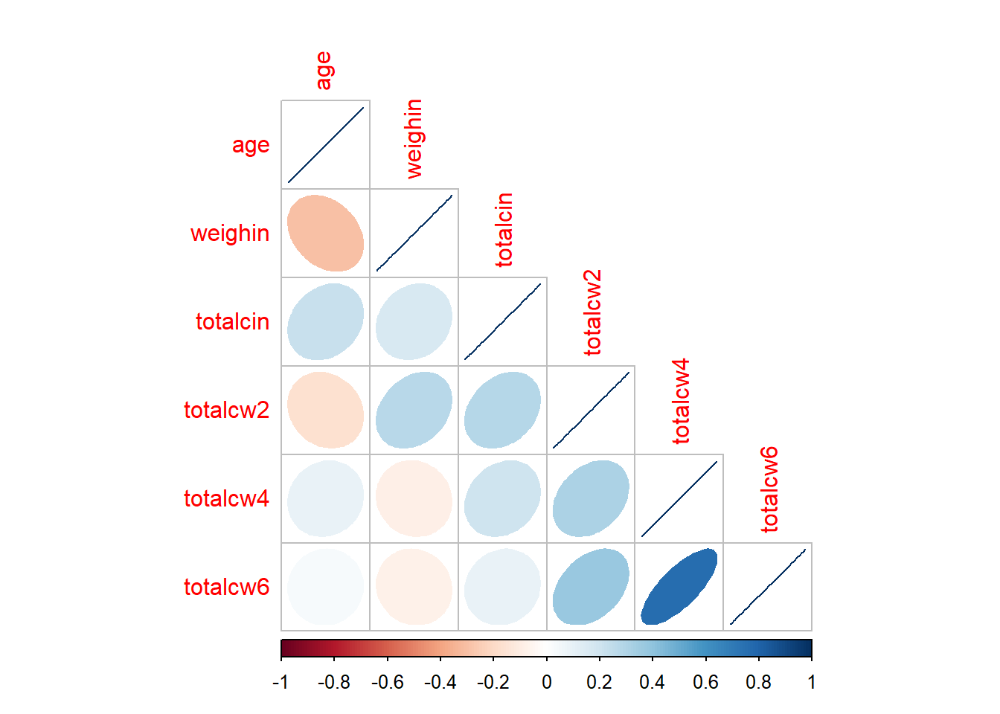

1 Linear Correlation: “Cancer”
Compiled: October 15, 2025
# install.packages("remotes")
# remotes::install_github("sarbearschwartz/apaSupp")
# remotes::install_github("ddsjoberg/gtsummary")
library(tidyverse) # Loads several very helpful 'tidy' packages
library(haven) # Read in SPSS datasets
library(psych) # Lots of nice tid-bits
library(GGally) # Extension to 'ggplot2' (ggpairs)
library(corrplot) # Correlation Matrix plots
library(apaSupp) # APA 7th ed tables1.1 PURPOSE
1.1.1 Research Question
Is there a relationship between the demographics and oral condition over the 6 weeks?
1.1.2 Data Description
The Cancer data set contains 4 repeated measure of oral condition for 25 cancer patients to see if an aloe treatment helps with oral condition (ulcers).
cancer_raw <- haven::read_spss("https://raw.githubusercontent.com/CEHS-research/eBook_ANOVA/master/data/Cancer.sav")Rows: 25
Columns: 9
$ ID <dbl> 1, 5, 6, 9, 11, 15, 21, 26, 31, 35, 39, 41, 45, 2, 12, 14, 16…
$ TRT <dbl> 0, 0, 0, 0, 0, 0, 0, 0, 0, 0, 0, 0, 0, 0, 1, 1, 1, 1, 1, 1, 1…
$ AGE <dbl> 52, 77, 60, 61, 59, 69, 67, 56, 61, 51, 46, 65, 67, 46, 56, 4…
$ WEIGHIN <dbl> 124.0, 160.0, 136.5, 179.6, 175.8, 167.6, 186.0, 158.0, 212.8…
$ STAGE <dbl> 2, 1, 4, 1, 2, 1, 1, 3, 1, 1, 4, 1, 1, 2, 4, 1, 2, 1, 4, 2, 1…
$ TOTALCIN <dbl> 6, 9, 7, 6, 6, 6, 6, 6, 6, 6, 7, 6, 8, 7, 6, 4, 6, 6, 12, 5, …
$ TOTALCW2 <dbl> 6, 6, 9, 7, 7, 6, 11, 11, 9, 4, 8, 6, 8, 16, 10, 6, 11, 7, 11…
$ TOTALCW4 <dbl> 6, 10, 17, 9, 16, 6, 11, 15, 6, 8, 11, 9, 9, 9, 11, 8, 11, 6,…
$ TOTALCW6 <dbl> 7, 9, 19, 3, 13, 11, 10, 15, 8, 7, 11, 6, 10, 10, 9, 7, 14, 6…cancer_clean <- cancer_raw %>%
dplyr::rename_all(tolower) %>%
dplyr::mutate(id = factor(id)) %>%
dplyr::mutate(trt = factor(trt,
labels = c("Placebo",
"Aloe Juice"))) %>%
dplyr::mutate(stage = factor(stage))Rows: 25
Columns: 9
$ id <fct> 1, 5, 6, 9, 11, 15, 21, 26, 31, 35, 39, 41, 45, 2, 12, 14, 16…
$ trt <fct> Placebo, Placebo, Placebo, Placebo, Placebo, Placebo, Placebo…
$ age <dbl> 52, 77, 60, 61, 59, 69, 67, 56, 61, 51, 46, 65, 67, 46, 56, 4…
$ weighin <dbl> 124.0, 160.0, 136.5, 179.6, 175.8, 167.6, 186.0, 158.0, 212.8…
$ stage <fct> 2, 1, 4, 1, 2, 1, 1, 3, 1, 1, 4, 1, 1, 2, 4, 1, 2, 1, 4, 2, 1…
$ totalcin <dbl> 6, 9, 7, 6, 6, 6, 6, 6, 6, 6, 7, 6, 8, 7, 6, 4, 6, 6, 12, 5, …
$ totalcw2 <dbl> 6, 6, 9, 7, 7, 6, 11, 11, 9, 4, 8, 6, 8, 16, 10, 6, 11, 7, 11…
$ totalcw4 <dbl> 6, 10, 17, 9, 16, 6, 11, 15, 6, 8, 11, 9, 9, 9, 11, 8, 11, 6,…
$ totalcw6 <dbl> 7, 9, 19, 3, 13, 11, 10, 15, 8, 7, 11, 6, 10, 10, 9, 7, 14, 6…cancer_clean %>%
dplyr::arrange(trt, stage, age, weighin) %>%
dplyr::select("Treatment" = trt,
"ID" = id,
"Stage" = stage,
"Age" = age,
"Weight" = weighin,
"Intake" = totalcin,
"Week 2" = totalcw2,
"Week 4" = totalcw4,
"Week 6" = totalcw6) %>%
flextable::as_grouped_data(groups = "Treatment") %>%
flextable::flextable() %>%
flextable::add_header_row(values = c("" , "Oral Condition"),
colwidths = c(5, 4)) %>%
apaSupp::theme_apa(caption = "Cancer Dataset",
general_note = "Age is in years and Weight is in pounds. Age, Weight, and Stage as well as the first oral condition refer to baseline or intake appointment. Yellow denotes missing values.",
d = 0) %>%
flextable::hline( part = "header", i = 1, j = 6:9) %>%
flextable::hline( part = "body", i = 15) %>%
flextable::bg(bg = "yellow", i = c(17, 23), j = 9)Oral Condition | ||||||||
|---|---|---|---|---|---|---|---|---|
Treatment | ID | Stage | Age | Weight | Intake | Week 2 | Week 4 | Week 6 |
Placebo | ||||||||
35 | 1 | 51 | 189 | 6 | 4 | 8 | 7 | |
9 | 1 | 61 | 180 | 6 | 7 | 9 | 3 | |
31 | 1 | 61 | 213 | 6 | 9 | 6 | 8 | |
41 | 1 | 65 | 157 | 6 | 6 | 9 | 6 | |
21 | 1 | 67 | 186 | 6 | 11 | 11 | 10 | |
45 | 1 | 67 | 186 | 8 | 8 | 9 | 10 | |
15 | 1 | 69 | 168 | 6 | 6 | 6 | 11 | |
5 | 1 | 77 | 160 | 9 | 6 | 10 | 9 | |
2 | 2 | 46 | 164 | 7 | 16 | 9 | 10 | |
1 | 2 | 52 | 124 | 6 | 6 | 6 | 7 | |
11 | 2 | 59 | 176 | 6 | 7 | 16 | 13 | |
26 | 3 | 56 | 158 | 6 | 11 | 15 | 15 | |
39 | 4 | 46 | 149 | 7 | 8 | 11 | 11 | |
6 | 4 | 60 | 136 | 7 | 9 | 17 | 19 | |
Aloe Juice | ||||||||
42 | 0 | 73 | 182 | 8 | 11 | 16 | ||
22 | 1 | 27 | 225 | 6 | 7 | 6 | 6 | |
14 | 1 | 42 | 163 | 4 | 6 | 8 | 7 | |
44 | 1 | 67 | 187 | 5 | 7 | 7 | 7 | |
37 | 1 | 86 | 140 | 6 | 7 | 7 | 7 | |
16 | 2 | 44 | 261 | 6 | 11 | 11 | 14 | |
50 | 2 | 60 | 164 | 6 | 8 | 16 | ||
34 | 2 | 77 | 164 | 5 | 7 | 13 | 12 | |
58 | 4 | 54 | 173 | 7 | 8 | 10 | 8 | |
12 | 4 | 56 | 227 | 6 | 10 | 11 | 9 | |
24 | 4 | 68 | 226 | 12 | 11 | 12 | 9 | |
Note. Age is in years and Weight is in pounds. Age, Weight, and Stage as well as the first oral condition refer to baseline or intake appointment. Yellow denotes missing values. | ||||||||

1.3 PEARSON’S CORRELATION
1.3.1 Using the Default Settings
The cor.test() function needs at least TWO
arguments:
-
formula - The formula specifies the two variabels between which you would like to calcuate the correlation. Note at the two variable names come AFTER the tilda symbol and are separated with a plus sign:
~ continuous_var1 + continuous_var2 -
data - Since the datset is not the first argument in the function, you must use the period to signify that the datset is being piped from above
data = .
cancer_clean %>%
cor.test(~ age + weighin, # formula: order doesn't matter
data = .) # data piped from above
Pearson's product-moment correlation
data: age and weighin
t = -1.4401, df = 23, p-value = 0.1633
alternative hypothesis: true correlation is not equal to 0
95 percent confidence interval:
-0.6130537 0.1213316
sample estimates:
cor
-0.2875868 1.3.2 Additional Arguments
-
alternative - The
cor.test()function defaults to thealternative = “two.sided”. If you would like a one-sided alternative, you must choose which side you would like to test:alternative = “greater”to test for POSITIVE correlation oralternative = “less”to test for NEGATIVE correlation. -
method - The default is to calculate the Pearson correlation coefficient (
method = “pearson”), but you may also specify the Kendall’s tau (method = “kendall”)or Spearman’s rho (method = “spearman”), which are both non-parametric methods. -
conf.int - It also defaults to testing for the two-sided alternative and computing a 95% confidence interval (
conf.level = 0.95), but this may be changed.
Since the following code only specifies thedefaults, it Will give the same results as if you did not type out the last three lines (see above).
cancer_clean %>%
cor.test(~ age + weighin,
data = .,
alternative = "two.sided", # or "greater" (positive r) or "less" (negative r)
method = "pearson", # or "kendall" (tau) or "spearman" (rho)
conf.level = .95) # or .90 or .99 (ect)
Pearson's product-moment correlation
data: age and weighin
t = -1.4401, df = 23, p-value = 0.1633
alternative hypothesis: true correlation is not equal to 0
95 percent confidence interval:
-0.6130537 0.1213316
sample estimates:
cor
-0.2875868 Non-Significant Correlation
APA Results: There was no evidence of an association in overall oral condition from baseline to two week follow-up, $r(25) = -0.288 \(p < .163\).
1.3.3 Statistical Significance
cancer_clean %>%
ggplot(aes(x = totalcin,
y = totalcw4)) +
geom_count() +
geom_smooth(method = "lm") +
theme_bw()
Pearson's product-moment correlation
data: totalcin and totalcw4
t = 1.0911, df = 23, p-value = 0.2865
alternative hypothesis: true correlation is not equal to 0
95 percent confidence interval:
-0.1899343 0.5672525
sample estimates:
cor
0.2218459
Pearson's product-moment correlation
data: totalcw2 and totalcw4
t = 1.718, df = 23, p-value = 0.09923
alternative hypothesis: true correlation is not equal to 0
95 percent confidence interval:
-0.06678726 0.64625711
sample estimates:
cor
0.3372434 NOT Statistically Significant Correlation
APA Results: No evidence of a correlation between oral between weeks two and four was found, t(23) = 1.72, p = .099.
cancer_clean %>%
ggplot(aes(x = totalcw4,
y = totalcw6)) +
geom_point() +
geom_smooth(method = "lm") +
theme_bw()
Pearson's product-moment correlation
data: totalcw4 and totalcw6
t = 5.4092, df = 21, p-value = 2.296e-05
alternative hypothesis: true correlation is not equal to 0
95 percent confidence interval:
0.5117459 0.8940223
sample estimates:
cor
0.762999 Statistically Significant Correlation
APA Results: Overall oral condition was positively correlated (r = .763) between weeks four and six, t(21) = 5.41, p < .001.
1.4 CORRELATION TABLES
Missing Values - Listwise Deletion vs. Pairwise Deletion
cancer_clean %>%
dplyr::filter(complete.cases(totalcin, totalcw2, totalcw4, totalcw6)) %>%
dplyr::select("Baseline" = totalcin,
"Week 2" = totalcw2,
"Week 4" = totalcw4,
"Week 6" = totalcw6) %>%
apaSupp::tab_cor(caption = "Correlations Between Repeated Measures of Total Oral Condition, Listwise Deletion",
general_note = "Listwise deletion applied, thus only participants with oral condition captured at all four occations are utilized.",
p_note = "apa3")Variable Pair | r | p | |
|---|---|---|---|
Baseline | Week 2 | .280 | .192 |
Baseline | Week 4 | .210 | .346 |
Baseline | Week 6 | .098 | .657 |
Week 2 | Week 4 | .310 | .145 |
Week 2 | Week 6 | .380 | .075 |
Week 4 | Week 6 | .760 | < .001*** |
Note. N = 23. r = Pearson's Product-Moment correlation coefficient.Listwise deletion applied, thus only participants with oral condition captured at all four occations are utilized. | |||
*** p < .001. | |||
cancer_clean %>%
dplyr::select("Baseline" = totalcin,
"Week 2" = totalcw2,
"Week 4" = totalcw4,
"Week 6" = totalcw6) %>%
apaSupp::tab_cor(caption = "Correlations Between Repeated Measures of Total Oral Condition, Pairwise Deletion",
general_note = "Pairwise-deletion used for each pair of obseration times.",
p_note = "apa3")Variable Pair | r | p | |
|---|---|---|---|
Baseline | Week 2 | .310 | .126 |
Baseline | Week 4 | .220 | .287 |
Baseline | Week 6 | .098 | .657 |
Week 2 | Week 4 | .340 | .099 |
Week 2 | Week 6 | .380 | .075 |
Week 4 | Week 6 | .760 | < .001*** |
Note. N = 25. r = Pearson's Product-Moment correlation coefficient.Pairwise-deletion used for each pair of obseration times. | |||
*** p < .001. | |||
1.5 PAIRS PLOTS
1.5.3 Using the ggplot2 and GGally packages
cancer_clean %>%
dplyr::select(age, weighin,
totalcin, totalcw2, totalcw4, totalcw6) %>%
data.frame %>%
ggscatmat() +
theme_bw()
cancer_clean %>%
data.frame %>%
ggscatmat(columns = c("age", "weighin",
"totalcin", "totalcw2", "totalcw4", "totalcw6"),
color = "trt") +
theme_bw()
1.6 CORROLAGRAMS
1.6.1 Simple Correlation Matrix (Base R)
cancer_clean %>%
dplyr::select(age, weighin,
totalcin, totalcw2, totalcw4, totalcw6) %>%
cor(method = "pearson",
use = "complete.obs") age weighin totalcin totalcw2 totalcw4 totalcw6
age 1.00000000 -0.29909121 0.22386540 -0.1613892 0.09918029 0.03015273
weighin -0.29909121 1.00000000 0.16403694 0.2763478 -0.08013506 -0.07750304
totalcin 0.22386540 0.16403694 1.00000000 0.2819648 0.20604650 0.09786664
totalcw2 -0.16138924 0.27634783 0.28196479 1.0000000 0.31354250 0.37809488
totalcw4 0.09918029 -0.08013506 0.20604650 0.3135425 1.00000000 0.76299899
totalcw6 0.03015273 -0.07750304 0.09786664 0.3780949 0.76299899 1.000000001.6.2 Using the Default Settings
cancer_clean %>%
dplyr::select(age, weighin,
totalcin, totalcw2, totalcw4, totalcw6) %>%
cor(method = "pearson",
use = "complete.obs") %>%
corrplot::corrplot()
1.6.3 Changing the shape
cancer_clean %>%
dplyr::select(age, weighin,
totalcin, totalcw2, totalcw4, totalcw6) %>%
cor(method = "pearson",
use = "complete.obs") %>%
corrplot::corrplot(method = "square")
1.6.4 Only Displaying Half
cancer_clean %>%
dplyr::select(age, weighin,
totalcin, totalcw2, totalcw4, totalcw6) %>%
cor(method = "pearson",
use = "complete.obs") %>%
corrplot::corrplot(method = "ellipse",
type = "lower")